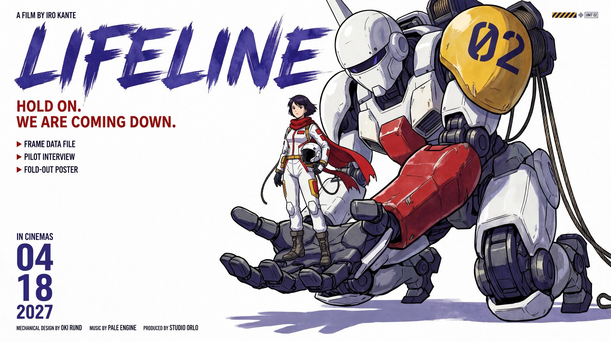
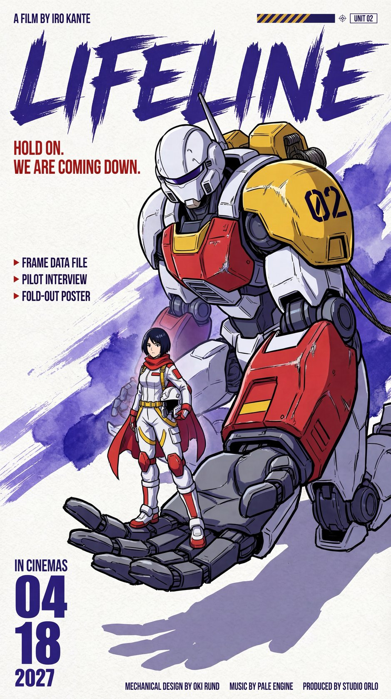
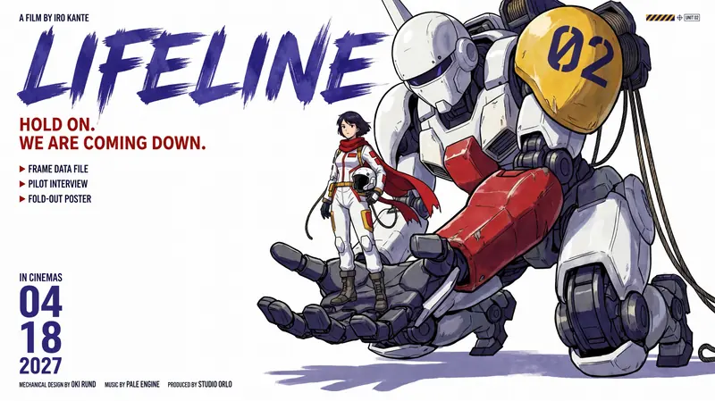
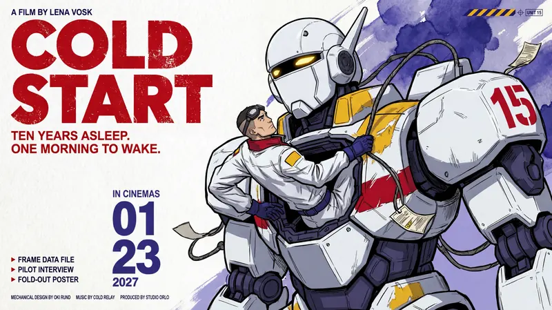
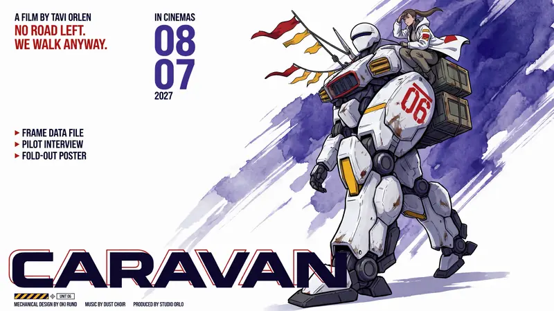
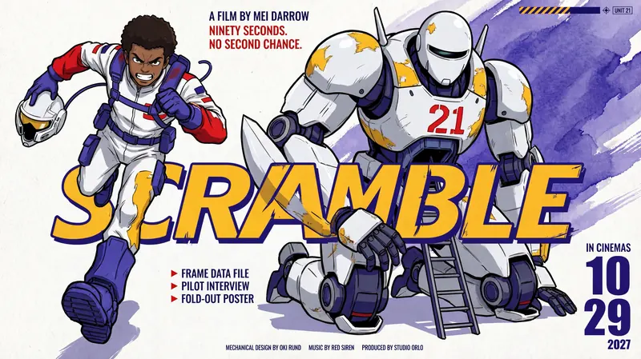

Type Posters · AI image style prompt
Cover Unit
Fictional mecha anime film key art laid out like an animation monthly cover: ink-line cel-shaded work-frame robots on white paper, violet brush swashes, vermilion and amber blocks, masthead titles and a full cover info layer.


4 example cases
Same style.json, different subjects. Each case's values are in the examples section of the JSON.




What this style does
Key art for a fictional mecha anime film on white paper, laid out like an animation monthly cover: an original engineering work-frame robot drawn in fine black ink line with two-step hard-edge cel shading, irregular vermilion and amber color blocks thrown across its shadow areas, ultramarine-violet watercolor brush swashes behind it, and a pilot in a white flight suit beside it for scale. Fixed palette (paper white with cool gray, ultramarine violet with deep indigo, vermilion, amber yellow, black ink line). Each case gets one masthead-scale title (violet dry-brush lettering, distressed vermilion condensed bold, rounded bold with an offset vermilion outline, or amber-outlined italic) plus a cover information layer: director line, two-line vermilion tagline, three triangle-bulleted teaser lines, a huge stacked release date, a hazard strip with a unit number, and one line of production small print.
Signature traits
- Key-visual poster for a fictional mecha anime film, laid out like an anime monthly cover, on one white paper ground with faint grain; the ground stays 30-40% empty and never becomes a full scene or a photo.
- Hand-inked anime mechanical illustration: crisp thin black ink line art with varied line weight, dense panel lines and joint detail, flat cel shading in two hard-edged tones (white armour, cool grey shadow planes); no airbrush, no 3D render.
- Original work-frame robots with smooth rounded white armour, exposed dark indigo joints, a helmet-dome head with one wide dark visor band, one short side sensor mast, amber hazard panels and a large stencilled unit number; never a hero-robot face with twin eyes, a V-shaped antenna or a chin block. One original adult pilot in a white flight suit gives the scale.
- Whole armour and suit panels filled with flat vermilion red or amber yellow like chipped two-colour livery paint, hard-edged, never splatter; loose translucent ultramarine violet watercolour washes and dry-brush streaks behind the subject; one hard-edged pale violet cast shadow.
- Fixed palette that all appears in every poster: paper white with cool grey, ultramarine violet with deep indigo, vermilion red, amber yellow, black ink line.
- One short film title at masthead scale, partly covered by the robot or the pilot. The lettering style is designed per case (jagged violet dry-brush capitals, worn vermilion heavy condensed capitals, heavy rounded indigo-black letters with a vermilion ghost outline, wide slanted amber capitals with a thick indigo outline) and never repeats inside the series.
style.json
{
"schema_version": "2.2",
"style_name": "Cover Unit",
"style_slug": "cover-unit",
"style_version": "1.0",
"style_summary": "Key art for a fictional mecha anime film on white paper, laid out like an animation monthly cover: an original engineering work-frame robot drawn in fine black ink line with two-step hard-edge cel shading, irregular vermilion and amber color blocks thrown across its shadow areas, ultramarine-violet watercolor brush swashes behind it, and a pilot in a white flight suit beside it for scale. Fixed palette (paper white with cool gray, ultramarine violet with deep indigo, vermilion, amber yellow, black ink line). Each case gets one masthead-scale title (violet dry-brush lettering, distressed vermilion condensed bold, rounded bold with an offset vermilion outline, or amber-outlined italic) plus a cover information layer: director line, two-line vermilion tagline, three triangle-bulleted teaser lines, a huge stacked release date, a hazard strip with a unit number, and one line of production small print.",
"category": "Type Posters",
"environment_variables": {
"ASPECT_RATIO": "9:16 or 16:9",
"STYLE_FIDELITY_ANCHORS": "Runtime shared CORE and FLEX rules",
"SOURCE_CONTENT_TO_AVOID": "Runtime exclusions from all four references",
"SUBJECT": "Original work-frame robot and adult pilot",
"SUBJECT_ACTION": "Action, pose and camera angle",
"MAIN_TEXT": "Exact short film title",
"DESIGN_DIRECTION": "Placement of title, robot, pilot and information layer with landscape adaptation, title lettering style, exact secondary text"
},
"style_fidelity_anchors": [
"[CORE] Key-visual poster for a fictional mecha anime film, laid out like an anime monthly cover, on one white paper ground with faint grain; the ground stays 30-40% empty and never becomes a full scene or a photo.",
"[CORE] Hand-inked anime mechanical illustration: crisp thin black ink line art with varied line weight, dense panel lines and joint detail, flat cel shading in two hard-edged tones (white armour, cool grey shadow planes); no airbrush, no 3D render.",
"[CORE] Original work-frame robots with smooth rounded white armour, exposed dark indigo joints, a helmet-dome head with one wide dark visor band, one short side sensor mast, amber hazard panels and a large stencilled unit number; never a hero-robot face with twin eyes, a V-shaped antenna or a chin block. One original adult pilot in a white flight suit gives the scale.",
"[CORE] Whole armour and suit panels filled with flat vermilion red or amber yellow like chipped two-colour livery paint, hard-edged, never splatter; loose translucent ultramarine violet watercolour washes and dry-brush streaks behind the subject; one hard-edged pale violet cast shadow.",
"[CORE] Fixed palette that all appears in every poster: paper white with cool grey, ultramarine violet with deep indigo, vermilion red, amber yellow, black ink line.",
"[CORE] One short film title at masthead scale, partly covered by the robot or the pilot. The lettering style is designed per case (jagged violet dry-brush capitals, worn vermilion heavy condensed capitals, heavy rounded indigo-black letters with a vermilion ghost outline, wide slanted amber capitals with a thick indigo outline) and never repeats inside the series.",
"[CORE] Cover information layer in small bold condensed capitals: 'A FILM BY' line, two-line vermilion tagline, a stack of three cover lines with triangle bullets, 'IN CINEMAS' with huge stacked date numerals in violet, a technical strip with hazard stripes and the unit code, one row of tiny credits.",
"[FLEX] Robot class, pilot, action, camera angle, title lettering and title position change per case while paper ground, inked cel rendering, palette and information layer stay fixed. Landscape versions are recomposed natively, never cropped from the vertical."
],
"source_content_to_avoid": [
"All source titles, names and marks: ARUNNA, CHAIN OF SHADOWS, AFTERMATH, NOVA KORVEX, KORVEX STUDIOS, NK-07, every credited name, press outlet, website and date in the references.",
"The Newtype masthead, its 'THE MOVING PICTURES MAGAZINE' line, its price and issue numerals, and every real anime title, studio and Japanese cover line printed on the two magazine covers.",
"Any Gundam or other existing mecha design: no V-shaped antenna, no twin-eye face with a red chin block, no white-blue-red-yellow hero-robot colour scheme, no beam rifle or shield.",
"Real festival names and trademarks seen in the references: Tokyo, Annecy, Sitges and Berlin festival laurels, IMAX, Dolby, PG-13 and R rating boxes.",
"R1 pairing of two long-haired women in mecha exo-armour holding rifles in an alley of hanging banners under a violet brush title; no revealing outfits.",
"R2 pairing of a white-suited figure with indigo skin, a gas mask on the belt and one raised hand under a giant distressed red title.",
"R3 pairing of a grey robot diving head-first with one huge open hand under a red masthead; R4 pairing of a white robot head close-up with a yellow antenna under a black masthead.",
"No firearms or weapons, no existing film, anime or game characters, no signatures or creator handles."
],
"visual_deconstruction": {
"genre": "Fictional mecha anime film key visual laid out like an anime monthly cover.",
"energy": {
"density": "60-70% active surface; paper keeps 30-40% empty.",
"layering": "Paper ground, violet washes, title, robot and pilot, information layer.",
"disorder": "Dry-brush washes, chipped paint and print wear; line art stays crisp and precise.",
"tension": "Masthead-scale title partly hidden by a robot in extreme foreshortening, a small human pilot against a huge machine, tiny precise cover text against huge numerals."
},
"fusion": {
"genre": "R1 and R2: festival-style poster for an invented sci-fi anime film; R3 and R4: anime monthly cover with a robot over the masthead. Every title, name, masthead and robot replaced.",
"palette": "R1 white ground with violet washes and red-yellow banners; R2 indigo, red and yellow blotches on grey paper; R3 red masthead with grey armour and gold; R4 white armour with yellow and red.",
"finish": "R3 and R4 crisp inked mechanical line art with cel shading + R2 flat red and yellow colour patches and paper grain + R1 loose watercolour washes and a hard cast shadow.",
"type": "R1 jagged violet brush title; R2 worn heavy condensed title; R3 heavy rounded masthead with ghost outline; R4 ultra-heavy masthead and outlined yellow cover lettering; small condensed capitals from all four.",
"layout": "R3 and R4 masthead across the top with the robot overlapping it and cover lines stacked at the edge; R1 huge stacked date numerals at the side; R2 technical strip with hazard stripes and unit code.",
"secondary": "'A film by' line, tagline, cover-line stack with triangle bullets, stacked release date, hazard-stripe technical strip, credit row.",
"balance": "R1 25%, R2 25%, R3 25%, R4 25%."
},
"grammar": [
"Crisp inked robot line art with flat cel shading and chipped livery panels",
"White paper, violet wash, vermilion, amber",
"Masthead-scale title plus small precise cover text"
],
"signature": {
"R1": "Two armed women in exo-armour in a banner alley replaced by a walker robot carrying cargo and plain pennants with its pilot on the shoulder; the violet brush lettering moves to the rescue case.",
"R2": "White-suited figure with indigo skin and a gas mask replaced by a sprinting pilot with a kneeling robot behind; the worn red lettering moves to the hatch close-up.",
"R3": "Diving grey hero robot with an open hand under a red masthead replaced by a kneeling rescue frame offering its palm to its pilot under a violet brush title.",
"R4": "White hero-robot head with a yellow antenna under a black masthead replaced by a visor-dome work frame with its pilot leaning out of the hatch under a worn vermilion title."
},
"series_constants": "White paper ground, inked cel-shaded original work-frame robots with visor-dome heads, one pilot in a white flight suit, vermilion and amber livery panels, violet washes, fixed information layer. Title lettering, robot class, camera angle and title position rotate per case."
},
"composition": {
"ratio_pair": "9:16 / 16:9, generate natively",
"structure": "Robot plus pilot occupy 50-60% in a foreshortened diagonal; title occupies 15-30% and is partly covered by the subject; information layer sits in the margins.",
"placement": "Full-width top / two-line top stack / lower third / centre band."
},
"typography": {
"class": "Masthead-scale display lettering designed per case; four different lettering styles in one series.",
"primary": "Only MAIN_TEXT is huge; spell exactly.",
"texture": "Dry-brush splinters, letterpress wear, ghost outline or thick outline on the title; small bold condensed sans capitals for the information layer; never a signature tag."
},
"color_palette": {
"ground": "paper white #F1EFEC with cool grey #B9BDC6",
"ink": "ultramarine violet #4B3FB5 and deep indigo #2A2452",
"accent": "vermilion red #D92B1F",
"highlight": "amber yellow #F2B21B"
},
"image_treatment": {
"base": "Crisp black ink line art with flat two-tone cel shading; hand-drawn anime mechanical illustration, not photographic and not 3D.",
"local_effects": "Flat vermilion and amber livery panels with chipped edges, loose violet watercolour washes, faint paper grain.",
"light": "Two-tone hard light with one hard-edged pale violet cast shadow."
},
"design_rules": [
"Violet, vermilion and amber are all clearly visible in every sample on the white paper ground.",
"Robots are original work frames with a visor-dome head; never an existing hero-robot design.",
"Title lettering is different in each case and the subject partly covers the title.",
"Every sample shows contributions from all four references.",
"No real magazine masthead, studio, festival, cinema-format or rating logos."
],
"do": [
"Keep about one third of the paper empty.",
"Give each case a different robot class, camera angle, lettering style and title position.",
"Check every text element enlarged for spelling and duplicates."
],
"avoid": [
"Existing mecha designs, V-shaped antennas, twin-eye faces, weapons.",
"Real mastheads and trademarks, Japanese cover lines, festival laurels.",
"Airbrush gradients, 3D rendering, neon glow, extra colours, calm standing poses."
],
"prompt_template": "Create one full-bleed {ASPECT_RATIO} key-visual poster for a fictional mecha anime film in the Cover Unit style, laid out like an anime monthly cover.\nRender: crisp black ink line art, flat two-tone cel shading, flat vermilion and amber livery panels with chipped edges, loose ultramarine violet watercolour washes behind, one hard pale violet cast shadow.\nGround: white paper with faint grain, about one third empty.\nSubject: {SUBJECT}\nAction: {SUBJECT_ACTION}\nComposition, lettering style and secondary text: {DESIGN_DIRECTION}\nTitle, exact: \"{MAIN_TEXT}\", spelled letter by letter, masthead scale, in the case's own lettering style, partly covered by the subject.\nPalette: paper white and cool grey, ultramarine violet and deep indigo, vermilion red, amber yellow, black ink line; violet, vermilion and amber all visible.\nInformation layer: 'A FILM BY' line, two-line vermilion tagline, three cover lines with triangle bullets, IN CINEMAS with huge stacked date numerals, hazard-stripe technical strip with unit code, one credit row; each exactly once.\n{STYLE_FIDELITY_ANCHORS}\nExclude: {SOURCE_CONTENT_TO_AVOID}",
"negative_prompt": "Existing anime robots, hero-robot face, V-shaped antenna, twin eyes, chin block, beam rifle, guns, weapons, real magazine masthead, real anime titles, Japanese text, festival laurels, cinema-format logos, rating boxes, websites, barcode, revealing outfits, children, airbrush gradients, 3D render, photo, neon glow, extra colours, calm standing pose, tiny title, misspelled text, duplicated text elements, signature, creator handle, watermark.",
"examples": [
{
"case_name": "rescue-reach",
"values": {
"MAIN_TEXT": "LIFELINE",
"SUBJECT": "A towering original rescue work-frame robot: smooth rounded white armour shells over exposed dark indigo joint mechanics, a smooth helmet-dome head with one wide dark horizontal visor band and no face, one short blade sensor mast on one side of the head only, amber yellow hazard panels, vermilion red markings, one whole shoulder shell and the backpack painted amber yellow, one whole forearm and the chest plate painted vermilion red, a big stencilled number 02 on its shoulder, winch cables hanging from its back. Its original adult pilot: a woman with a short dark bob, in a white flight suit with vermilion and amber patches, a long vermilion scarf, amber harness straps and heavy boots, a helmet under one arm.",
"SUBJECT_ACTION": "The robot kneels and leans far forward over the viewer, one gigantic open hand lowered to the ground and thrust toward the camera with extreme foreshortening so the palm is the largest shape in the picture; the pilot stands balanced on the palm leaning into the wind, scarf and harness straps streaming, staring straight at the viewer; cables swing; seen from a very low camera.",
"DESIGN_DIRECTION": "LIFELINE in one line across the full width in the upper quarter; the robot's helmet head and shoulders loom at the upper right, the head overlapping the last letters of the title; its arm sweeps down the right side and the giant open palm fills the lower centre with the pilot standing on it; violet washes rise behind the robot at the right; technical strip and 'A FILM BY' line along the top edge above the title; tagline at the left under the title; cover-line stack at the left edge in the middle; date block at the lower left; credits row along the bottom edge. Landscape: LIFELINE in one line across the upper left two thirds; the robot's head and torso fill the right third leaning left, cropped by the top and right edges, the head overlapping the last letter; the giant open palm with the pilot standing on it reaches to the lower centre; violet washes behind the robot; 'A FILM BY' line above the title; tagline under the title at the left; cover-line stack at the left edge below it; date block at the lower left; technical strip at the upper right; credits row along the bottom edge. Type: jagged dry-brush capitals in ultramarine violet with splintered stroke ends, paint bleed and white scratches. 'A FILM BY IRO KANTE', tagline 'HOLD ON. / WE ARE COMING DOWN.', cover lines 'FRAME DATA FILE / PILOT INTERVIEW / FOLD-OUT POSTER', date 04 over 18 with 2027, 'UNIT 02', credits 'MECHANICAL DESIGN BY OKI RUND MUSIC BY PALE ENGINE PRODUCED BY STUDIO ORLO'."
}
},
{
"case_name": "hatch-wake",
"values": {
"MAIN_TEXT": "COLD START",
"SUBJECT": "A heavy original work-frame robot that has stood dormant for years: smooth rounded white armour shells over exposed dark indigo joint mechanics, a smooth helmet-dome head with one wide dark horizontal visor band and no face, one short blade sensor mast on one side of the head only, amber yellow hazard panels, vermilion red markings, a big stencilled number 15 on its shoulder, loose cables and paper warning tags hanging from the armour. Its original adult pilot: a man with an undercut and goggles pushed up on his forehead, in a white flight suit with a vermilion collar and an amber shoulder patch, indigo gloves.",
"SUBJECT_ACTION": "Extreme close-up from below at a three-quarter angle: the robot's helmet head and one massive shoulder fill the frame, the visor band just lighting up amber; the chest hatch under the head is swung open and the pilot leans far out of it on one straight arm, hauling a thick cable with the other hand and looking up at the head; tags and cables whip sideways.",
"DESIGN_DIRECTION": "COLD START in two stacked lines, COLD over START, filling the full width of the top third; the helmet head and shoulder rise from the bottom right and fill the lower two thirds, the top of the helmet and the sensor mast overlapping the lower line of the title, the shoulder cropped by the right and bottom edges; the pilot leans out of the hatch at the lower left of centre; violet washes behind the head; 'A FILM BY' line and technical strip along the top edge; tagline at the left edge under the title; cover-line stack at the left edge below it; date block at the lower left; credits row along the bottom edge. Landscape: COLD START in two stacked lines filling the left half; the helmet head and shoulder fill the right half, cropped by the top, right and bottom edges, the helmet overlapping the last letters of both lines; the pilot leans out of the hatch at the lower centre; violet washes behind the head; 'A FILM BY' line above the title; tagline under the title; cover-line stack at the lower left; date block at the lower centre left; technical strip at the upper right; credits row along the bottom edge. Type: very heavy condensed capitals in vermilion red with rough letterpress wear, chips and scraped patches. 'A FILM BY LENA VOSK', tagline 'TEN YEARS ASLEEP. / ONE MORNING TO WAKE.', cover lines 'FRAME DATA FILE / PILOT INTERVIEW / FOLD-OUT POSTER', date 01 over 23 with 2027, 'UNIT 15', credits 'MECHANICAL DESIGN BY OKI RUND MUSIC BY COLD RELAY PRODUCED BY STUDIO ORLO'."
}
},
{
"case_name": "long-march",
"values": {
"MAIN_TEXT": "CARAVAN",
"SUBJECT": "A tall long-legged original walker work-frame robot: smooth rounded white armour shells over exposed dark indigo joint mechanics, a smooth helmet-dome head with one wide dark horizontal visor band and no face, one short blade sensor mast on one side of the head only, amber yellow hazard panels, vermilion red markings, a big stencilled number 06 on its thigh, stacked cargo crates lashed to its back and strings of small plain vermilion and amber cloth pennants with no writing tied from its sensor mast to the cargo. Its original adult pilot: a woman with a long ponytail, in a white hooded flight coat with vermilion and amber patches, trousers and boots.",
"SUBJECT_ACTION": "The robot is caught mid-stride on a steep diagonal, one enormous foot planted in the foreground toward the viewer with strong foreshortening, body twisting, pennants and cables whipping back; the pilot crouches on the robot's shoulder gripping a rail with one hand and shading her eyes with the other, coat blowing; seen from ground level.",
"DESIGN_DIRECTION": "CARAVAN in one line across the full width in the lower third; the walking robot is huge and fills the upper two thirds, striding from upper right to lower left, its planted foot overlapping the middle letters of the title, its cargo and pennants cropped by the top and right edges; the pilot on its shoulder near the top; tall vertical violet washes behind it; 'A FILM BY' line and tagline stacked at the upper left; cover-line stack at the left edge in the middle; technical strip under the title at the left; date block at the right edge in the middle above the title; credits row along the bottom edge. Landscape: CARAVAN in one line across the left two thirds along the bottom third; the walking robot fills the right half from the top edge to the bottom edge, striding left, its planted foot overlapping the last letters of the title, pennants streaming to the upper left across the frame; the pilot on its shoulder; tall violet washes behind it; 'A FILM BY' line and tagline stacked at the upper left; cover-line stack at the left edge in the middle; date block at the upper centre left; technical strip at the lower left above the credits; credits row along the bottom edge. Type: very heavy rounded geometric sans letters in deep indigo-black, tightly spaced, with one thin vermilion outline copy of the whole word offset behind it like a misprint. 'A FILM BY TAVI ORLEN', tagline 'NO ROAD LEFT. / WE WALK ANYWAY.', cover lines 'FRAME DATA FILE / PILOT INTERVIEW / FOLD-OUT POSTER', date 08 over 07 with 2027, 'UNIT 06', credits 'MECHANICAL DESIGN BY OKI RUND MUSIC BY DUST CHOIR PRODUCED BY STUDIO ORLO'."
}
},
{
"case_name": "deck-sprint",
"values": {
"MAIN_TEXT": "SCRAMBLE",
"SUBJECT": "An original adult pilot with dark brown skin and short curly hair, in a white flight suit with one vermilion sleeve, one amber leg panel and indigo straps, indigo gloves and boots, an oxygen hose trailing from the collar, a white helmet with an amber visor in one hand. Behind: an original work-frame robot: smooth rounded white armour shells over exposed dark indigo joint mechanics, a smooth helmet-dome head with one wide dark horizontal visor band and no face, one short blade sensor mast on one side of the head only, amber yellow hazard panels, vermilion red markings, a big stencilled number 21 on its chest.",
"SUBJECT_ACTION": "The pilot sprints straight at the viewer, body pitched forward, one boot enormous in the foreground with strong foreshortening, helmet swinging in one hand, the other fist punching forward, hose and straps flying, teeth clenched; directly behind and towering over the pilot, the robot kneels on one knee with its chest hatch open and a boarding ladder down, one huge hand braced on the ground, its head bent toward the pilot.",
"DESIGN_DIRECTION": "SCRAMBLE in one line across the full width just below the centre; the kneeling robot is huge and fills the whole upper half from edge to edge above the title, cropped by the top and right edges, its braced hand and knee overlapping the top of the letters, its head near the top right; the sprinting pilot is huge in the lower two thirds at the centre left, body overlapping the middle letters of the title, front boot near the bottom edge, cast shadow to the right; violet washes behind the robot; 'A FILM BY' line and tagline stacked at the upper left; technical strip at the top right; cover-line stack at the right edge under the title; date block at the lower right; credits row along the bottom edge. Landscape: SCRAMBLE in one line across the full width through the centre; the kneeling robot is huge and fills the right two thirds above and behind the title, cropped by the top and right edges, its braced hand overlapping the last letters; the sprinting pilot is huge at the left third from the top edge to the bottom edge, body overlapping the first letters, front boot toward the lower centre; violet washes behind the robot; 'A FILM BY' line and tagline stacked at the upper centre; cover-line stack at the lower centre; date block at the lower right; technical strip at the top right; credits row along the bottom edge. Type: wide heavy forward-slanted capitals filled with amber yellow, with a thick deep indigo outline and a hard indigo drop shadow, slightly chipped. 'A FILM BY MEI DARROW', tagline 'NINETY SECONDS. / NO SECOND CHANCE.', cover lines 'FRAME DATA FILE / PILOT INTERVIEW / FOLD-OUT POSTER', date 10 over 29 with 2027, 'UNIT 21', credits 'MECHANICAL DESIGN BY OKI RUND MUSIC BY RED SIREN PRODUCED BY STUDIO ORLO'."
}
}
]
}